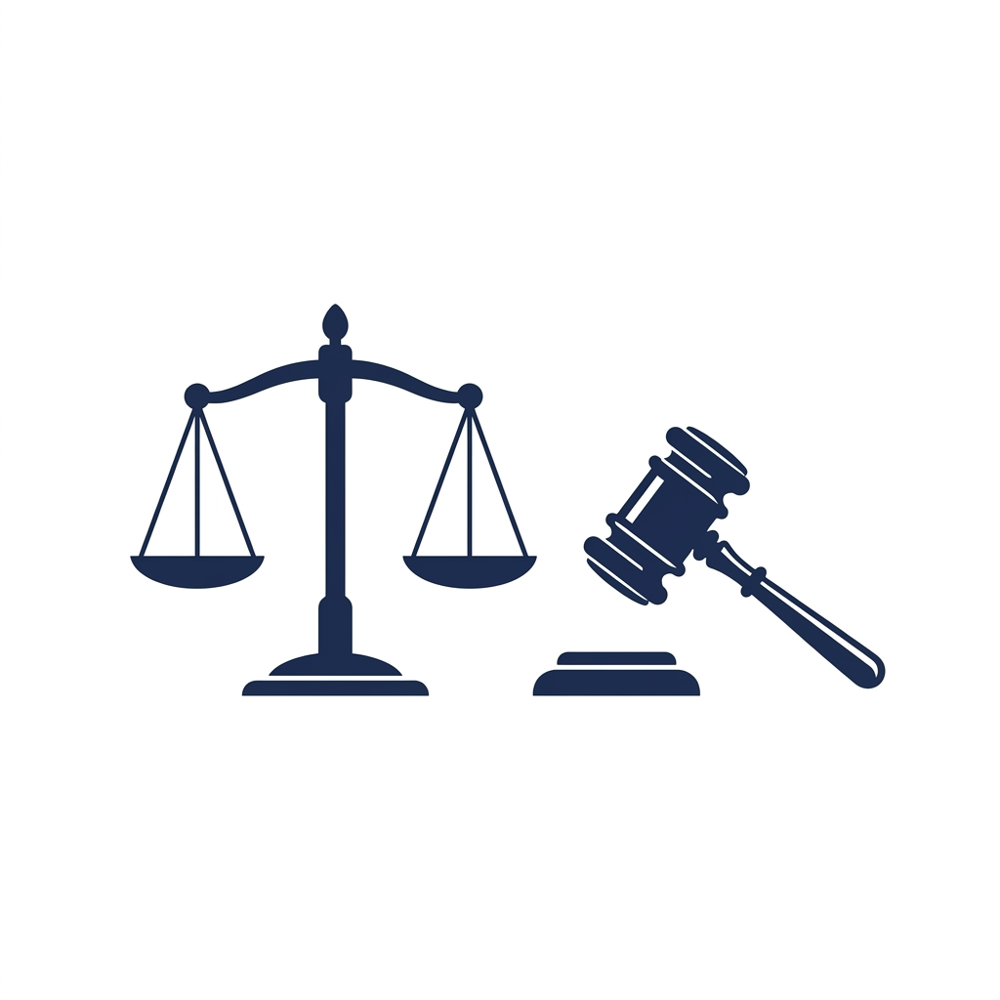
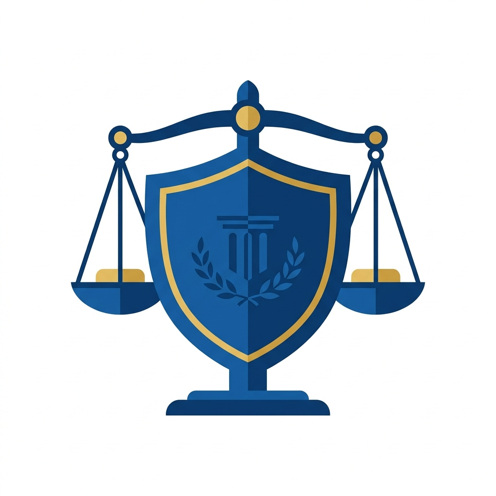

Vardaan Learning Institute
ICSE Class 10 Civics • Chapter Notes
🌐 vardaanlearning.com📞 9508841336Team Vardaan ❤️
Chapter 4: The Judiciary - The Supreme Court

India has a single integrated judicial system. Unlike the USA, we do not have separate federal and state courts. The Supreme Court of India is at the apex (top) of this system, followed by the High Courts at the state level, and Subordinate Courts at the district level. Decisions made by the Supreme Court are binding on all other courts in India.
1. Composition of the Supreme Court
- The Supreme Court consists of the Chief Justice of India (CJI) and a maximum of 33 other judges (Total strength: 34).
- Parliament has the power to increase the number of judges by law.
2. Qualifications for a Supreme Court Judge
Qualifications
To be appointed as a Judge of the Supreme Court, a person must:
- Be a citizen of India.
- Have been a Judge of a High Court for at least 5 years; OR
- Have been an Advocate of a High Court for at least 10 years; OR
- Be a distinguished jurist in the opinion of the President.
3. Appointment and Term of Office
- Appointment: Every Judge of the Supreme Court (including the CJI) is appointed by the President of India. In appointing other judges, the President must consult the Chief Justice of India (usually through the Collegium system).
- Term: A judge holds office until attaining the age of 65 years.
- Removal (Impeachment): A judge can be removed from office by the President only after a resolution is passed by both Houses of Parliament with a special majority, on the grounds of proven misbehavior or incapacity.
4. Independence of the Judiciary

For a democracy to function properly, the judiciary must be impartial and free from the control of the executive and legislature. The Constitution ensures this through:
- Security of Tenure: Judges can only be removed through a very difficult impeachment process.
- Salaries drawn from Consolidated Fund: Their salaries are charged on the Consolidated Fund of India and cannot be voted upon or reduced by Parliament (except during a Financial Emergency).
- No practice after retirement: A retired judge of the Supreme Court is not allowed to practice law in any court in India, preventing them from seeking favors while in office.
- Power to punish for contempt: The Supreme Court can punish anyone who disrespects its authority or disobeys its orders.
5. Jurisdiction and Powers of the Supreme Court
A. Original Jurisdiction
Original jurisdiction refers to cases that can be brought directly to the Supreme Court in the first instance, rather than by appeal from a lower court.
- Disputes between the Government of India and one or more States.
- Disputes between two or more States.
- Enforcement of Fundamental Rights: Under Article 32, any citizen can directly approach the Supreme Court for the enforcement of Fundamental Rights by requesting the issue of Writs (Habeas Corpus, Mandamus, Prohibition, Quo Warranto, Certiorari).
B. Appellate Jurisdiction
The Supreme Court is the highest court of appeal in India. It hears appeals against the judgments of High Courts in:
- Constitutional Cases: Where a substantial question of law regarding the interpretation of the Constitution is involved.
- Civil Cases: Appeals can be made if the High Court certifies that the case involves a substantial question of general importance.
- Criminal Cases: An appeal lies to the Supreme Court if the High Court has reversed an order of acquittal and sentenced the accused to death, or if the High Court certifies that the case is fit for appeal.
C. Advisory Jurisdiction
Advisory
Under Article 143, the President of India can ask the Supreme Court for its opinion on any question of law or fact of public importance. The Supreme Court may or may not give its opinion, and the President is not legally bound to accept the advice.
D. Revisory Jurisdiction
- The Supreme Court has the power to review its own judgments or orders to correct any mistakes. This ensures that justice is not compromised due to an error by the court itself.
E. Judicial Review
Judicial Review
The Supreme Court has the power of Judicial Review. It can examine the constitutional validity of laws passed by Parliament or State Legislatures, and executive orders. If any law violates the Constitution (especially Fundamental Rights), the Supreme Court can declare it null and void (unconstitutional). This makes the Supreme Court the ultimate guardian of the Constitution.
F. Court of Record
- The judgments, proceedings, and acts of the Supreme Court are recorded for perpetual memory and testimony. These records are admitted as evidence and cannot be questioned when produced before any lower court.
- As a Court of Record, it has the power to punish for its contempt.